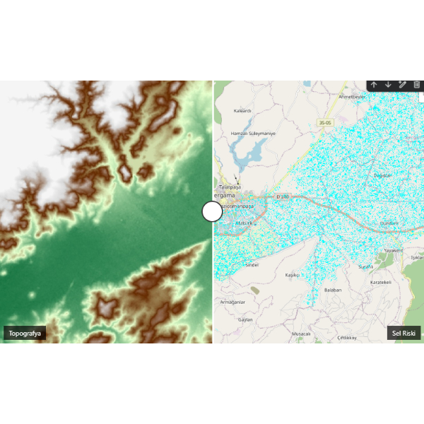
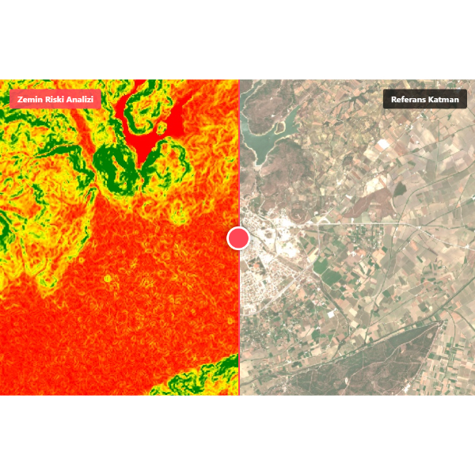
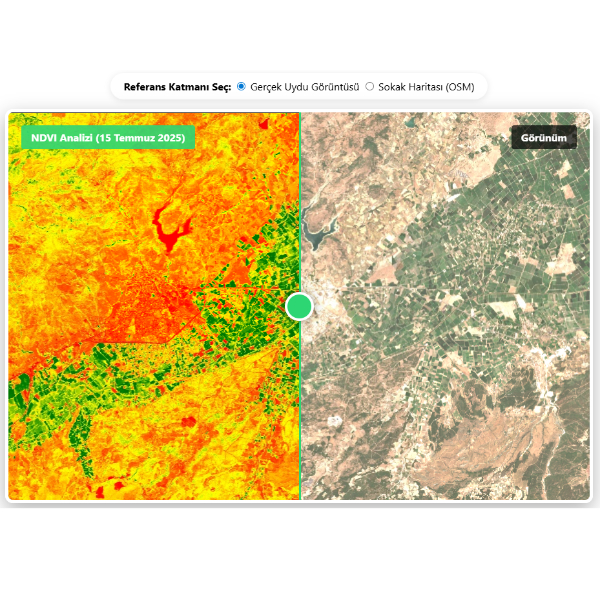

Veriyle Dünyayı Anlamak
Bu sayfa, coğrafi bilgiyi sadece birer statik görsel olarak değil; yaşayan, sorgulanabilen ve analiz edilebilen birer veri seti olarak ele alan projelerimi içermektedir. Çalışmalarımda Google Earth Engine (GEE) ve Python (Geemap) altyapısını kullanarak, uydu verilerini Türkiye Yüzyılı Maarif Modeli vizyonuna uygun, problem çözme odaklı dijital öğrenme araçlarına dönüştürmeyi hedefledim.
Büyük veri (Big Data) ile bulut tabanlı coğrafi analizler.
Etkileşimli haritalar ve mekansal veri görselleştirme.
Bu çalışmalar, TOÖS Öğretmen El Kitabı'nda tanımlanan "Senaryo Temelli Öğrenme" ve "5E Modeli" ile tam uyumludur:
Bergama Havzası Özelinde CBS Uygulamaları


